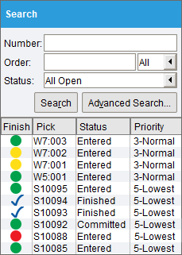
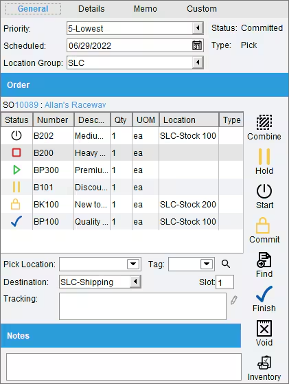
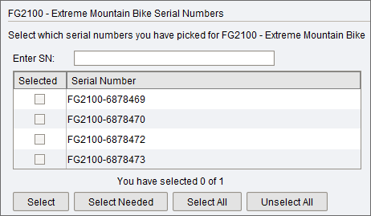
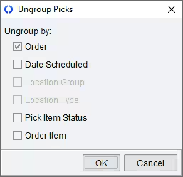
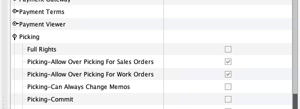
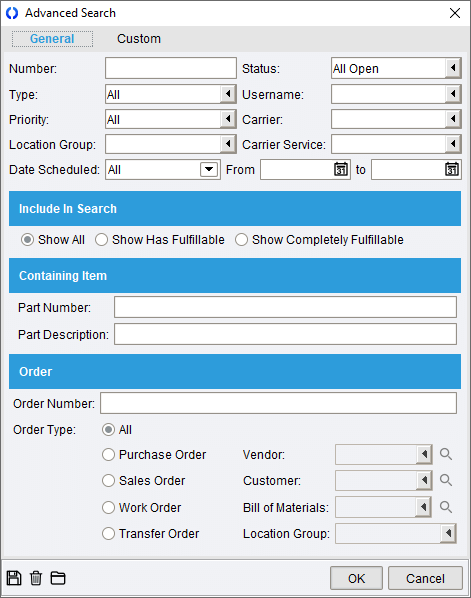

Fishbowl Inventory — Pick/Pack Visual Reference
Source: Fishbowl Advanced - Picking | Fishbowl Advanced - Shipping
Color-coded pick queue with status indicators and priority levels

Key UI observations:
- Color-coded status dots: green (ready), yellow (partial), red (short), checkmark (finished)
- Columns: Finish, Pick #, Status (Entered/Finished/Committed), Priority (3-Normal, 5-Lowest)
- Search filters: Number, Order (All), Status (All Open), Advanced Search
- Double-click a pick to view Pick Details
Pick item table with tabs, status per item, and action buttons

Key UI observations:
- Tabs: General, Details, Memo, Custom
- Header fields: Priority (dropdown), Scheduled date, Status (Committed), Type (Pick), Location Group
- Order reference: SO10089 : Allan's Raceway
- Item table columns: Status icon, Number, Description, Qty, UOM, Location, Type
- Action buttons: Combine (merge picks), Hold (pause item), Start (begin picking)
- Status icons per item: Started, Short, Entered, Hold, Committed, Finished
Location group and pick location dropdowns for reassigning where to pick from

Key UI observations:
- Location Group dropdown: SLC, Consignment UT, LA
- Pick Location dropdown: SLC-Stock 100, SLC-Stock 200, SLC-Stock 300
- Destination field: separate from pick location
- Tracking field: for serial/lot tracking during pick
Hold functionality for pausing individual pick items

Key UI observations:
- Items table with Status, Number, Description, Qty, Location columns
- Combine button and Hold button on component toolbar
- Hold items are excluded from Start/Commit/Finish operations
Batch/wave picking — group multiple orders together for efficient picking

Key UI observations:
- Group Picks window controls which orders are grouped
- Grouping options: by scheduled date, by number of items
- Controls how many orders per group pick
Part tracking for serialized and lot-tracked items during picking

Key UI observations:
- Serial number and lot number selection during pick
- FIFO/FEFO enforcement for expiration-tracked items
- Tracking section appears below line items
Fishbowl Operational Model Summary
- Assumes: Dedicated warehouse staff, organized storage locations with bin assignments
- Optimized for: 50+ orders/day with dedicated picking staff
- Maturity required: High — needs defined locations, bin structure, formalized receiving
- Simple vs Rigid: Rigid — must follow Pick → Pack → Ship sequence, no skipping
- Powerful vs Burdensome: Powerful batch/wave picking; burdensome setup and location requirements
- Breaks under: Dirty inventory data, mid-flow order changes, partial returns on partial shipments